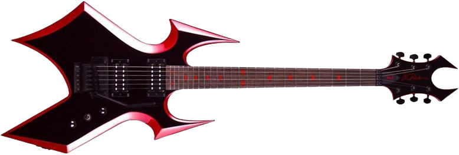

NU METAL
------------------------------------------------------
En este género se integra korn linkim park y
deftones, esto mezcla elementos como funk y hip-hop.
VOLVER
KORN
SYSTEM OF A DOWN
SLIPKNOT
DEFTONES
LIMPBIZKIT
LINKIN PARK
SNOT
